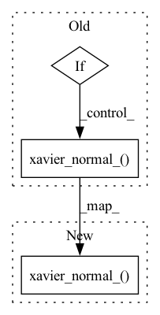

Pattern ID :2976
Before Change
self.AdaIN2 = AdaIN(self.latent_size, out_channels)
// Initializing weights
if not first_block:
nn.init.xavier_normal_( self.Conv1.weight.data)
nn.init.zeros_(self.Conv1.bias.data)
nn.init.xavier_normal_(self.Conv2.weight.data)
nn.init.zeros_(self.Conv2.bias.data)After Change
self.AdaIN2 = AdaIN(self.latent_size, out_channels)
// Initializing weights
nn.init.xavier_normal_( self.Conv1.weight.data)
nn.init.zeros_(self.Conv1.bias.data)
nn.init.xavier_normal_(self.Conv2.weight.data)
nn.init.zeros_(self.Conv2.bias.data)
In pattern: SUPERPATTERN
Frequency: 4
Non-data size: 3
Instances Fragment ID: 11447918
Project Name: maximkm/stylegan-anime
Commit Name: 485af9bacaa38c6d2ef013133fcf0b6d2b4fee95
Time: 2021-08-26
Author: maximkmwo@gmail.com
File Name: models/StyleGAN.py
M Class Name: BlockG
N Class Name: BlockG
M Method Name: __init__(6)
N Method Name: __init__(7)
M Parent Class: nn.Module
N Parent Class: nn.Module
M File Name: models/StyleGAN.py
N File Name: models/StyleGAN.py
M Start Line: 111
M End Line: 139
N Start Line: 125
N End Line: 133
Before Change
if feature != None:
embed = torch.nn.Embedding(feature.vocab_size, feature.embed_dim)
weight = embed.weight
if weight != None:
torch.nn.init.xavier_normal_( weight, self.gain)
if feature != None:
return embed
After Change
def __call__(self):
embed = torch.nn.Embedding(feature.vocab_size, feature.embed_dim)
torch.nn.init.xavier_normal_( embed.weight, self.gain)
return embed
class XavierUniform(object): Fragment ID: 11447917
Project Name: datawhalechina/torch-rechub
Commit Name: 28ae09eea62dd7edfecc4fe363331df8721dce89
Time: 2022-06-10
Author: 741456392@qq.com
File Name: torch_rechub/basic/initializers.py
M Class Name: XavierNormal
N Class Name: XavierNormal
M Method Name: __call__(1)
N Method Name: __call__(3)
M Parent Class: object
N Parent Class: object
M File Name: torch_rechub/basic/initializers.py
N File Name: torch_rechub/basic/initializers.py
M Start Line: 73
M End Line: 82
N Start Line: 52
N End Line: 55
Before Change
nn.init.xavier_normal_(self.Conv1.weight.data)
nn.init.zeros_(self.Conv1.bias.data)
if 2 * res_out == res_in:
self.down_sample = nn.AvgPool2d(3, 2, padding=1)
else:
self.Conv2 = nn.Conv2d(in_channels, out_channels, 3, 1, 1)
nn.init.xavier_normal_( self.Conv2.weight.data)
nn.init.zeros_(self.Conv2.bias.data)
def forward(self, x):
x = self.Conv1(x)After Change
// initializing weights
nn.init.xavier_normal_(self.Conv1.weight.data)
nn.init.zeros_(self.Conv1.bias.data)
nn.init.xavier_normal_( self.Conv2.weight.data)
nn.init.zeros_(self.Conv2.bias.data)
nn.init.xavier_normal_(self.down_sample.weight.data)
nn.init.zeros_(self.down_sample.bias.data)
Fragment ID: 11447915
Project Name: maximkm/stylegan-anime
Commit Name: 485af9bacaa38c6d2ef013133fcf0b6d2b4fee95
Time: 2021-08-26
Author: maximkmwo@gmail.com
File Name: models/StyleGAN.py
M Class Name: BlockD
N Class Name: BlockD
M Method Name: __init__(5)
N Method Name: __init__(5)
M Parent Class: nn.Module
N Parent Class: nn.Module
M File Name: models/StyleGAN.py
N File Name: models/StyleGAN.py
M Start Line: 229
M End Line: 244
N Start Line: 222
N End Line: 233
Before Change
if type(m) == nn.Linear:
// doing xavier initialization
// NOTE: Kaiming initialization will make the output too high, which leads to nan
if self._zero_init:
torch.nn.init.zeros_(m.weight.data)
else:
torch.nn.init.xavier_normal_( m.weight.data)
torch.nn.init.zeros_(m.bias.data)
def forward(self, x):
return self.net(x)After Change
if type(m) == nn.Linear:
// doing xavier initialization
// NOTE: Kaiming initialization will make the output too high, which leads to nan
torch.nn.init.xavier_normal_( m.weight.data)
m.weight.data *= self.scale
torch.nn.init.zeros_(m.bias.data)
def forward(self, x): Fragment ID: 11447921
Project Name: elife-asu/innlab
Commit Name: 22ad80276a2cd017cb9b6c1aae9e36186f7febbc
Time: 2022-03-28
Author: Zhang.Yanbo@asu.edu
File Name: INN/CouplingModels/utils.py
M Class Name: default_nonlinear_net
N Class Name: default_nonlinear_net
M Method Name: init_weights(2)
N Method Name: init_weights(2)
M Parent Class: nn.Module
N Parent Class: nn.Module
M File Name: INN/CouplingModels/utils.py
N File Name: INN/CouplingModels/utils.py
M Start Line: 28
M End Line: 32
N Start Line: 28
N End Line: 29